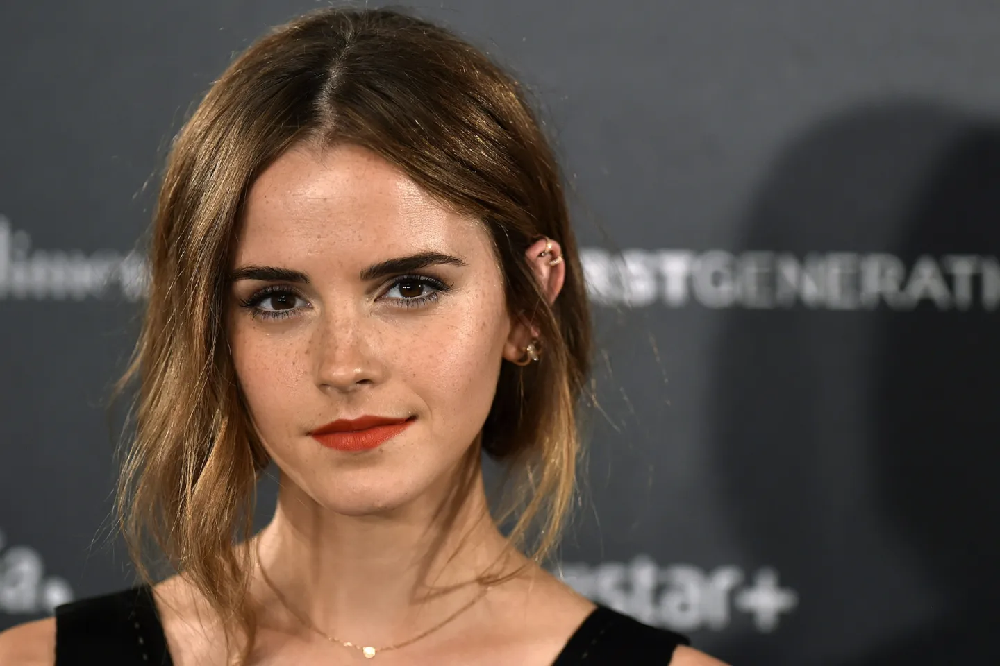
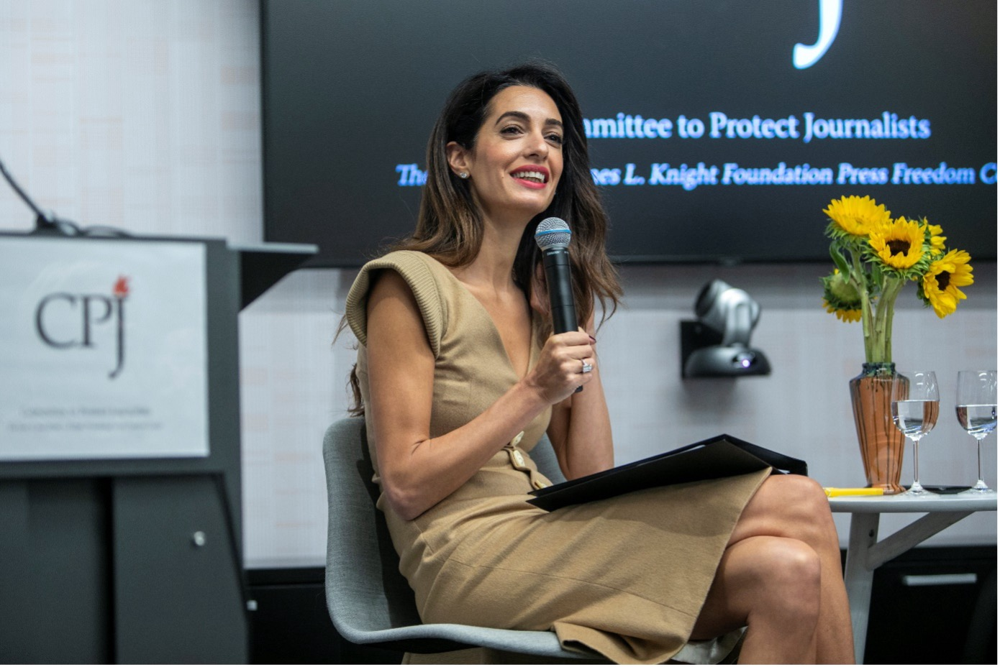
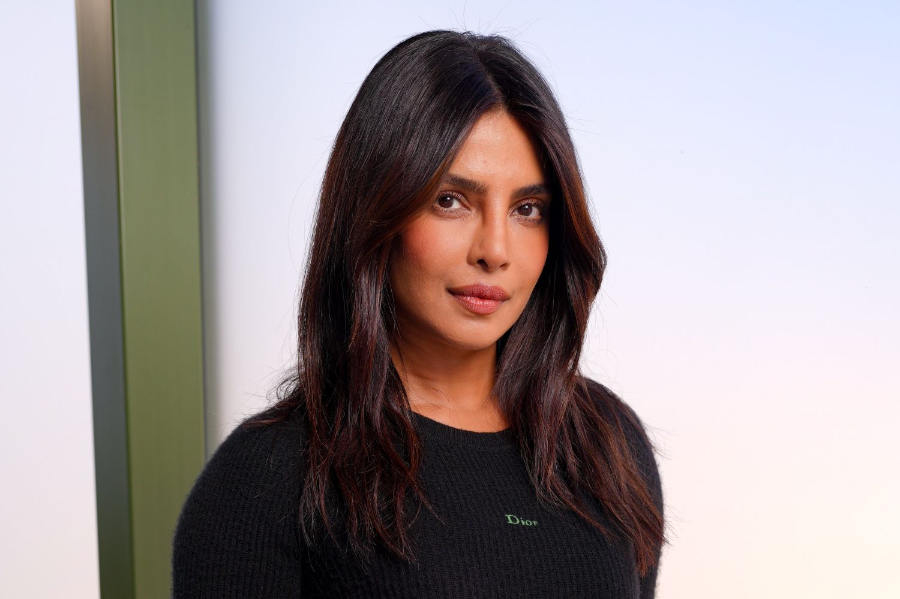
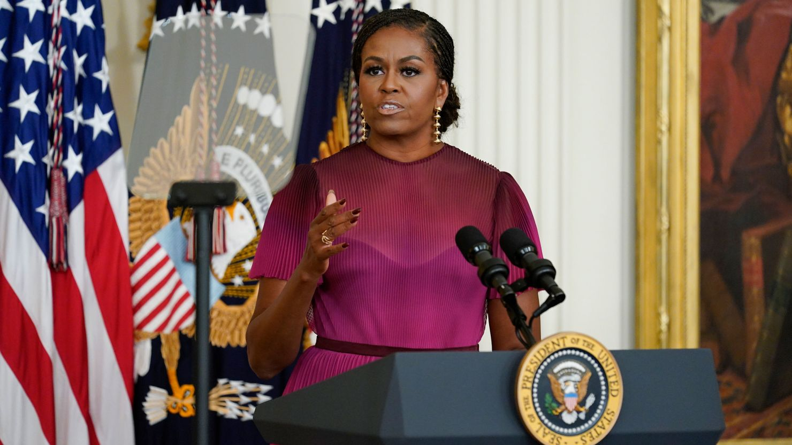
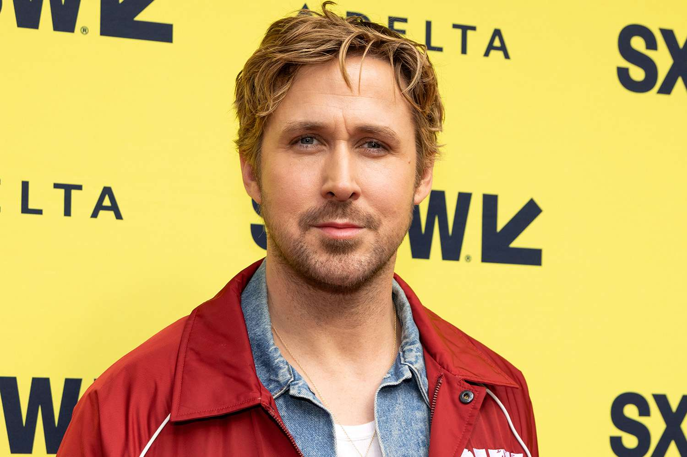
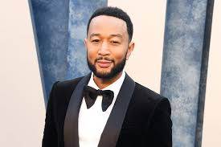
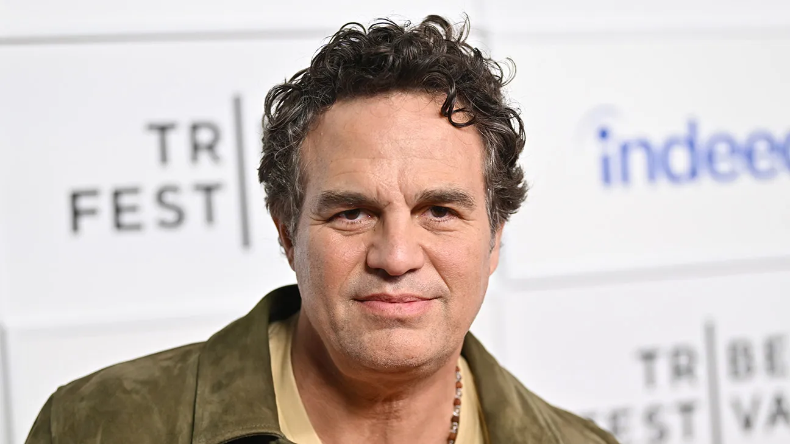
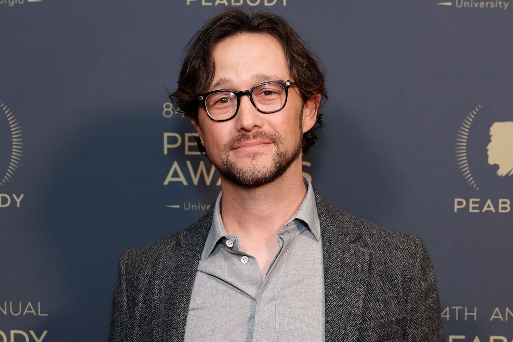

Emma Watson - engleska glumica;
ambasadorka organizacije Ujedinjenih nacija koja se bavi ravnopravnošću
polova;
pokretač kampanje #HeForShe.

Amal Clooney - poznati advokat za ljudska prava;
aktivistkinja koja se bori za slobodu govora,
prava žena i žrtava ratnih zločina.

Priyanka Chopra Jonas - indijska glumica i producent;
podiže svijest o nasilju i neravnopravnosti polova
kroz medijski uticaj i javne kampanje;
vođa globalne kampanje #StandWithHer.

Michelle Obama - kao prva dama SAD-a isticala je važnost obrazovanja,
zdravlja i jednakih mogućnosti za žene;
"Girls Opportunity Alliance" je program u okviru
Obama Fondacije koji ulaže u obrazovanje djevojčica širom svijeta
2024. godine donirao je preko milion dolara organizacijama
koje rade sa adolescentkinjama.

Ryan Gosling - kanadski glumac, javno podržava feminističke vrijednosti.

John Legend - aktivno podržava kampanju #MeToo i govori o važnosti
toga da muškarci budu saveznici u borbi protiv seksualnog uznemiravanja.

Mark Ruffalo - učestvovao u kampanjama protiv ukidanja prava na abortus
aktivno se zalaže za prava na izbor i reproduktivna prava žena.

Joseph Gordon-Levitt otvoreno se
naziva feministom i koristi svoje platforme
da promoviše jednakost polova.